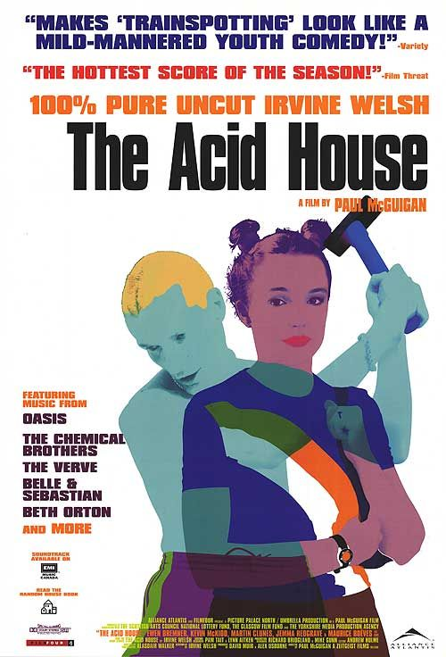

Ирвин Уэлш: экранизации произведений
Дэнни Бойл. «На игле» (англ. Trainspotting, 1996)
Культовая драма британского режиссёра Дэнни Бойла, снятый по одноимённому роману. Действие фильма происходит в Эдинбурге и в Лондоне, это история четырёх друзей, которых связывает лишь наркотическая зависимость, доводящая каждого до последней черты. В 2004 году фильм был признан лучшим шотландским фильмом всех времен и лучшим британским фильмом за последние 60 лет.
Пол Макгиган. «Кислотный дом» (англ. Acid House, 1998)
Драма британского кинорежиссёра Пола Макгигана, основанный на серии рассказов «Эйсид Хаус». Ирвин Уэлш сам написал сценарий к фильму и появляется в нём в эпизодической роли. Фильм состоит из трёх независимых частей: «Общее дело Грэнтон Стар», «Рохля» и «Кислотный дом». Единственное, что объединяет все эти новеллы, – изображённый пьяницей бог, который в следующей части лишается всех своих сил, а затем становится священником. Это три истории о тёмной стороне Шотландии и воспоминаниях Ирвина Уэлша.
Роб Хейдан. «Экстази» (англ. Irvine Welsh's Ecstasy, 2011)
Драма канадского кинорежиссёра Роба Хейдона.Три истории о любви по одноимённому роману. «Лоррейн едет в Ливингстон» - известная романистка сводит счеты с опостылевшим мужем, выбирая отнюдь не тривиальный способ. «И вечно прячется судьба» - Саманта хочет отомстить доктору, виновному в ее врожденном уродстве. «Непобедимые» - Хизер находит настоящую любовь в объятиях рейвера Ллойда.
Джон С. Бэрд. «Грязь» (англ. Filth, 2013)
Чёрная трагикомедия режиссёра Джона С. Бейрда, экранизации одноимённого романа. Главный герой — продажный шотландский полицейский Брюс Робертсон, помешанный на сексе и кокаине. Ему бы надо расследовать убийство, но ему сильно мешают собственные странности, привычка разыгрывать коллег и беготня за девушками. За Робертсоном присматривают его напарник Рэй Леннокс и начальник Боб Тоал./
Дэнни Бойл. «T2: Трейнспоттинг» (англ. T2 Trainspotting, 2017)

Драма британского режиссёра Дэнни Бойла. Сюжет картины базируется на романе «Порно», который является продолжением романа «На игле». В фильме главные герои предпринимают попытки организовать публичный дом. Съёмки фильма проходили в Эдинбурге